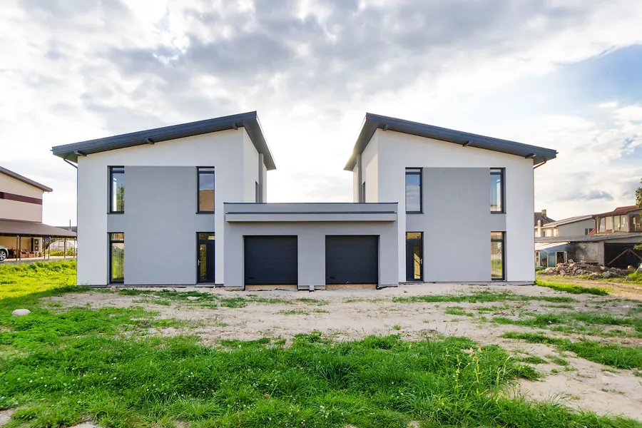
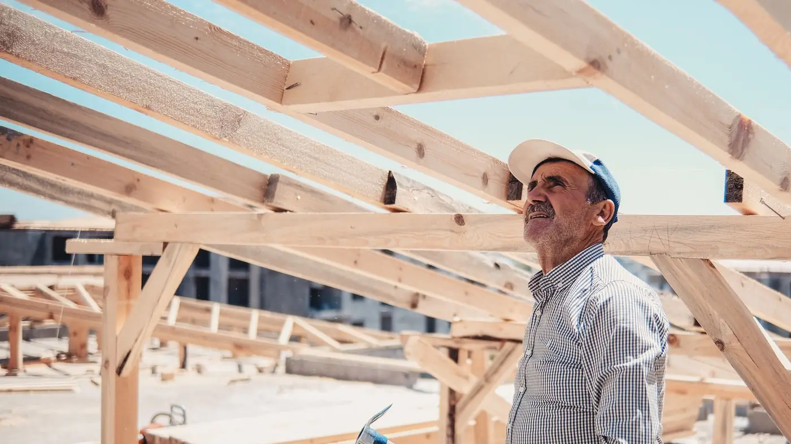
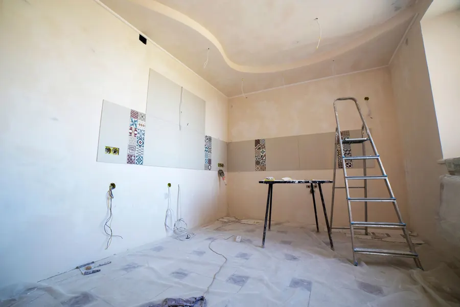
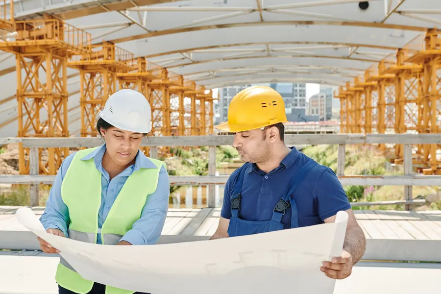
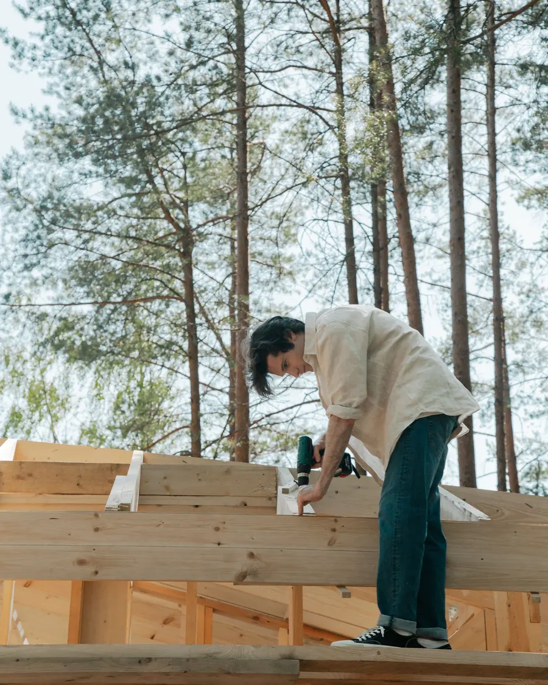
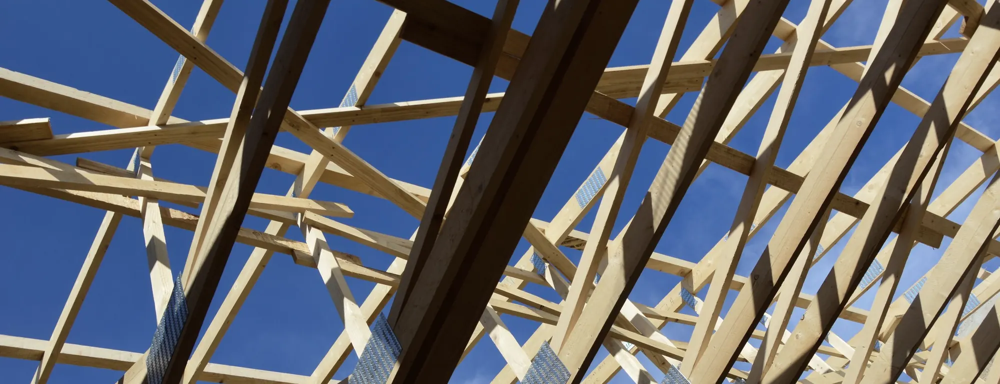
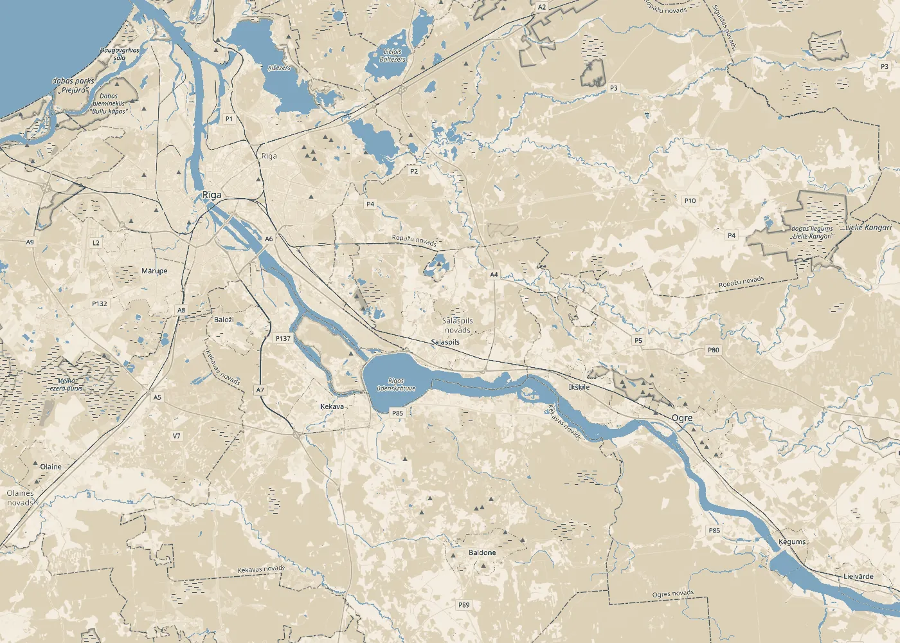

01
Ēku būvniecība
Privātmājas un citas ēkas: pamati, sienas, pārsegumi un jumts. Strādājam pēc projekta un saskaņotas tāmes.

Ēku būvniecība · Remonts · Būvdarbu vadīšana
SIA „Rapi serviss” ir būvuzņēmums Ikšķilē, Ogres novadā. Veicam ēku būvdarbus un remontu, vadām būvdarbus un uzraugām tos pasūtītāja pusē.
Pakalpojumi
No pamatiem līdz jumtam un no remonta līdz nodošanai. Ja jūsu darbs nav sarakstā, vienkārši pajautājiet.

Privātmājas un citas ēkas: pamati, sienas, pārsegumi un jumts. Strādājam pēc projekta un saskaņotas tāmes.

Ēku un telpu remonts, pārplānošana un apdare. Sākam ar objekta apskati un skaidru darbu sarakstu.

Organizējam darbus objektā: secību, brigādes, materiālus un termiņus. Kārtojam būvdarbu žurnālu un segto darbu aktus.
Pārstāvam pasūtītāju: pārbaudām, vai darbi atbilst projektam un normatīviem, pieņemam segtos darbus un fiksējam defektus.
Būvkomersantu reģistrā mūsu joma ir ēku būvdarbu vadīšana un būvuzraudzība.
Kā strādājam
Pastāstiet, kur atrodas objekts, kas jādara un kad. Ja ir projekts, pievienojiet to.
Apskatām objektu un projektu, lai saprastu darbu apjomu un riskus.
Vienojamies par darbiem, termiņiem un cenu. Visu nostiprinām līgumā.
Būvējam vai vadām darbus līdz pieņemšanai, ar dokumentiem kārtībā.


Laba ēka sākas ar skaidru plānu un atbildīgu cilvēku objektā.
Kur atrodamies
Mūsu juridiskā adrese ir Ikšķilē, starp Rīgu un Ogri. Ja objekts atrodas citur, piezvaniet vai uzrakstiet, un vienosimies.
Indrānu iela 50, Ikšķile,
Ogres nov., LV-5052

Kontakti
Visātrāk pa tālruni. Ja ērtāk rakstīt, pievienojiet adresi, projektu vai dažas fotogrāfijas.
Tālrunis+371 26 806 057 E-pastsandrejs.andersons@inbox.lvAdreseIndrānu iela 50, Ikšķile, Ogres nov., LV-5052
Uzņēmums